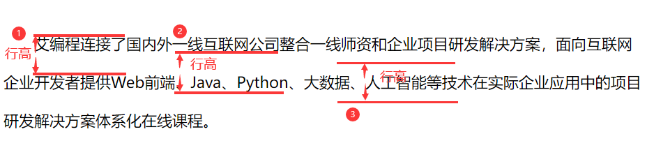
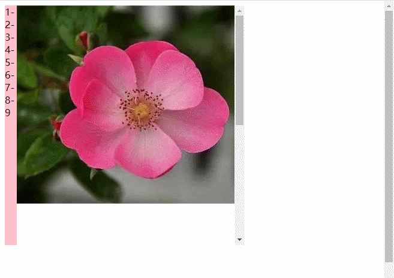
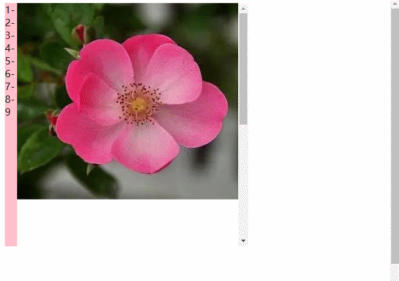
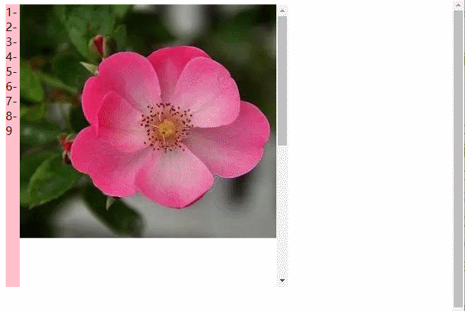
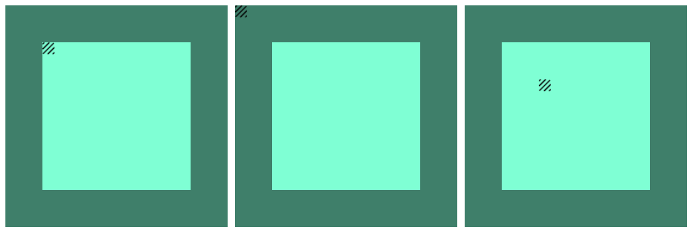
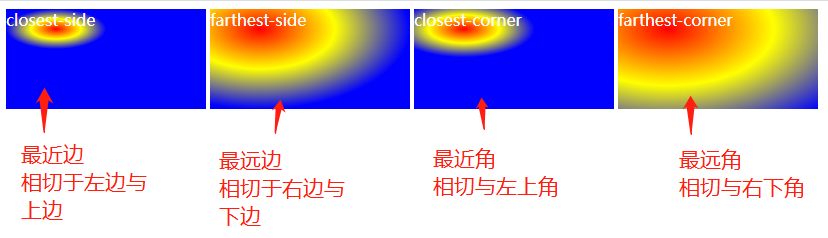
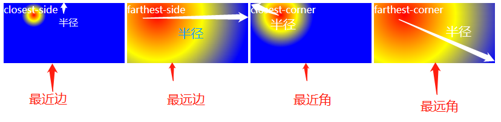
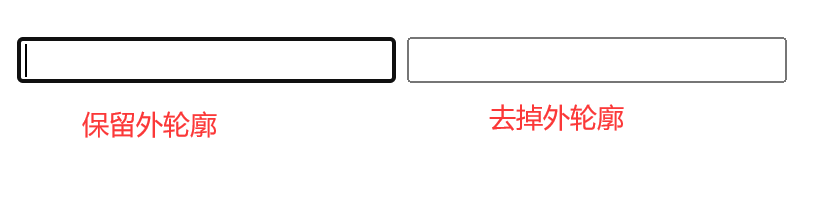
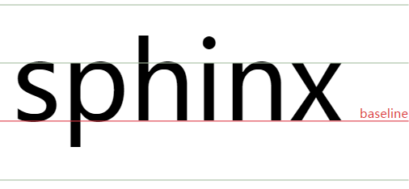

CSS文本属性、字体属性、列表属性
CSS字体属性
1.color属性
- 可设置文本内容的字体颜色
- color属性有四种表示法：
- 英文单词表示法
color:red;
- 十六进制表示法
- 设计图中标注的颜色通常为十六进制表示
- 每一种颜色分量都是0~255的数字，十六进制的ff就是十进制的255
- 如果颜色值是两两相同，并且有三对，
#aabbcc的形式可以简写为#abc
- 常用的十六进制表示法
|#fff|白色|
|#ccc、#333、#2f2f2f、#666、#ddd|灰色|
- rgb()表示法
- rgb是红蓝绿三个单词的缩写
- 三个数字的范围是0~255,数字之间用
,分隔
color:rgb(255,0,0);
- **rgba()表示法**
- 前三个数字是颜色,范围是0~255
- 第四个参数是透明度，范围是0~1，值越大越不透明
- rgba()表示法从IE9开始兼容
color: rgba(255,0,0,0.5)
2.font-size属性
- font-size属性用来设置文字的字号大小
- 单位通常为px(像素)、%(百分比)；移动端还会学习em、rem、vw、vh单位
- 网页文字正文默认为为16px，1em=两个字符
- 浏览器最小支持12px字号
- 面试题：如何在页面中设置小于12px的字体(学到动画时会讲)
- 百分比是相对于父元素的font-size而言
<style>
.fon1 {font-size:12px;}
.fon2 {font-size:16px;}
div p {font-size:50%;}
</style>
<body>
<p>这是一段默认大小的文字</p>
<p class="fon1">字体大小为12px</p>
<div class="fot2">
父元素为16px
<p>字体大小为父元素的50%</p>
</div>
</body>
3.font-weight属性
- 用来设置字体的粗细程度
- 可以用属性值或者数字来设置大小
- 数字介于1~1000之间，数字越大，字体越粗
- 最终的粗细要在当前字体可行的精细范围之内
| 属性 |
描述 |
normal |
正常粗细，与400等值 |
bold |
加粗，与700等值 |
lighter |
比从父元素继承来的值更细(处在字体可行的粗细值范围内)，大多数中文字体不支持 |
bolder |
比从父元素继承来的值更粗(处于字体可行的粗细范围内)大多数中文字体不支持 |
<style>
.we1 { font-weight: normal; }
.we2 {font-weight: bold; }
.we3 {font-weight: 500;}
.we4 {font-weight: lighter;}
.we5 {font-weight: bolder;}
</style>
<body>
<p class="we1">正常粗细</p>
<p class="we2">加粗文本</p>
<div class="we3">
父元素为600
<p class="we4">比父元素更细</p>
<p class="we5">比父元素更粗</p>
</div>
</body>
4.font-style属性
- 设置字体的倾斜
| 属性 |
描述 |
normal |
取消倾斜，把默认倾斜的i、em等标签设置为不倾斜 |
italic |
设置为倾斜字体(常用)，如果当前字体没有可用的斜体版本，会选用oblique替代 |
oblique |
设置为倾斜字体，用常规字体模拟(不常用) |
<style>
.sty1 {font-style: normal;}
.sty2 {font-style: italic;}
.sty3 {font-style: oblique;}
</style>
<body>
<i>这是一个默认倾斜字体</i> <br>
<i class="sty1">把默认倾斜设置为不倾斜</i>
<p class="sty2">italic下把不倾斜的设置为倾斜</p>
<p class="sty3">oblique下把不倾斜设置为倾斜</p>
</body>
5.font-family 字体类型
- 用于设置字体类型，浏览器默认字体为”微软雅黑”
- 可以设置多个字体类型，字体之间用
,分隔，如果第一个字体浏览器不支持，则会往后找；若都不支持，则会使用默认字体；
font-family:"Times New Rowman",Times,serif;
注：
- 中文字体要用
""包裹，英文字体中若有空格，也要用""(不加也可以)
- 字体通常必须是用户计算机已经安装好的字体，所以设置为:”微软雅黑””宋体”较多
- 中文字体也可以用英文名
| 中文字体名 |
英文字体名 |
| “微软雅黑” |
“Microsoft Yahei” |
| “宋体” |
“SimSun” |
6.@font-face自定义字体
- 用来设置用户电脑里没有的字体，用户浏览网页时会下载相关字体
- 准备工作
- 必须自己定义新的字体(需要有字体文件)
- 用户加载网页时会同时下载字体文件
- 字体文件需要同时拥有五种格式的文件,因为根据操作系统和浏览器不同，有
eot、woff2、woff、ttf、svg
- 如何定义字体
@font-face{
font-family: ;/*字体类型*/
src: url(); /*引入字体类型*/
}
<style>
@font-face {
}
.web-font {
}
</style>
<body>
<p>要定义的文字</p>
</body>
CSS文本属性
1.text-decoration属性-修饰线
- 用于设置文本的修饰线外观
- text-decoration是以下四个属性的简写
- 可以写在一行，以空格分隔
- 注：其他三个属性的前提是
line
| 属性 |
属性值 |
| text-decoration-line |
下划线underline、删除线line-through、没有修饰线none |
| text-decoration-color |
文本修饰的颜色 |
| text-decoration-style |
波浪线wavy、实线solid、虚线dashed |
| text-decoration-thickness |
文本修饰线的粗细 |
<style>
p {text-decoration:underline red 5px;}
div {text-decoration:wavy underline purple 3px;}
</style>
<body>
<p>有红色下划线的文本，下划线粗5px</p>
<div>一行有紫色波浪线的文本，线粗3px</div>
</body>
2.text-indent首行缩进
- 定义首行文本内容之前的缩进量
- 常用单位是
em、2em是两个字符的宽度
- 默认字符大小是16px，如果没有单独设置，那么2em=32px
<style>
.line1 {font-size:2em;}
.line2 {text-indent:2em;}
.line3 {font-size:2em;text-indent:2em;}
</style>
<body>
<p class="line1">默认文本，设置字体大小是两字符</p>
<p class="line2">首行缩进两字符</p>
<p class="line3">首行缩进两字符，字体大小为两字符</p>
</body>
3.行高
- 行高的测量方式
- ①②是行高测量上的定义，==③==是行高的真实定义：文字所占空间高度的总高，文字在这个高度的垂直方向==居中==显示
- 主段落内容的行高至少应为
1.5
- 如果文字的大小要随页面的缩放而变化，请使用无单位的数值，以确保行高会等比例的缩放
- 行高的值
| 单位 |
实例 |
说明 |
| px |
line-height:30px; |
行高为30px |
| 数值表示法 |
line-height:2; |
字号大小的两倍这是最推荐的写法，工作中常用倍数是1.25,1.5,1.75 |
| 百分比表示法 |
line-height:200%; |
字号大小的两倍 |
| normal |
line-height:normal; |
取决于客户端。桌面浏览器(包括Firefox)使用默认值，约为1.2，这取决于元素的font-family |
<style>
.p1 {line-height:20px;
background-color:skyblue;}
div {line-height:40px;
background-color: red;
font-family:"宋体"}
.p2 {line-height: 3;
background-color: aqua;
font-family: "微软雅黑";}
.p3 {line-heigt:normal;
background-color:coral;}
</style>
<body>
<p class="p1">设置行高为20px</p>
<div>这是一行行高40px的宋体</div>
<p class="p2">这是行高为3的微软雅黑</p>
<p class="p3">行高为normal的文字</p>
</body>
4.行文本垂直、水平居中
- 行文本垂直居中
- 设置**行高=盒子高度(height)**，即可实现单行文本垂直居中
- 对行内块元素无效
line-height: height的高度；
- text-align属性
- 定义行内内容(例如文字、图片、行内块元素)相对它的块父元素的对齐方式
- 注：块级元素不能用这个属性
- 常用属性值：
left、right、center
<style>
.l {text-align: left;}
.c {text-align:center;}
.r {text-align:right;}
</style>
<body>
<p class="l">这是居左文字</p>
<p class="c">这是居中文字</p>
<p class="r">这是居右文字</p>
</body>
5.font合写属性
- font属性可以用来作为
font-style、font-weight、font-size、line-height、font-family属性的合写
- 写法
- font属性连写时，必须设置
font-size和font-family才能生效
font-style和font-weight必须放在font-size之前- 连写时任何未指定的值都将设置为其对应的初始值，所以即使没有写行高，也有默认行高1.2
-行高写在fon-size后面，用/分隔
font:italic 20px/1.2 "宋体";
6.word-spacing字间距
- 对中文无效，仅对英文单词有效
| 属性值 |
描述 |
| normal |
正常的单词间距，有字体和/或浏览器定义 |
| 长度 |
通过指定具体额外间距来增加字体的单词间距,可以是负数 |
7.letter-spacing字符间距
- 用于设置文本字符的间距
- 对中文和英文都有效，单词会被分隔成一个个字母
| 属性值 |
描述 |
| normal |
正常的单词间距，有字体和/或浏览器定义 |
| 长度 |
通过指定具体额外间距来增加字体的单词间距,可以是负数 |
<style>
.word1 {word-spacing:normal;}
.word2 {word-spacing:-10px;}
.letter1 {letter-spacing:10px;}
.letter2 {letter-spacing:-10px;}
.lo {letter-spacing:10px;}
</style>
<body>
<p class="word1">I love you ,我爱你,正常间距</p>
<p class="word2">I love you ,我爱你,负间距</p>
<p class="letter1">I love you ,我爱你,10Px间距</p>
<p class="letter2">I love you ，我爱你，负间距</p>
<div>I love you<p class="lo">我爱你</p></div>
</body>
列表样式
1.list-style-type
- 设置列表项标记的类型
- 实际开发中的一般会把前面的标记类型去掉，用做好的小图标替代
| 值 |
描述 |
| none |
无标记(去掉圆点) |
| disc |
默认，实心圆 |
| circle |
空心圆 |
| square |
实心方块 |
| decimal |
数字 |
| decimai-leading-zero |
0开头的数字，01、02、03 |
| lower-alpha |
小写英文字母 |
| upper-alpha |
大写英文字母 |
| …… |
标记的类型有20多项，但实际开发中几乎不用 |
联系之前在HTML学过的列表标签:
注：style=""等于写在<style>标签里
| html(已废弃) |
CSS |
type="circle" |
style="list-style-type:circle" |
ol-li |
list-type:decimal |
2.list-style-image
- 用来指定列表中的列表标记图像，几乎不用
| 值 |
描述 |
| URL |
图像的路径 |
| none |
默认，无图形被现实 |
| inherit |
规定从父元素继承该属性的值 |
3.list-style-position
- 规定列表中列表项目标记的位置，几乎不用
| 值 |
描述 |
| inside |
列表标记项目放置在文本以内，环绕文本并根据标记对齐 |
| outside |
默认，标记位于文本的左侧、且放置在文本以外，环绕文本不根据标记对齐 |
| inherit |
规定从父元素继承该属性的值 |
4.list-style
list-style:delcima-leading-zero outside;
- 实际开发中用的最多的是去掉标记:
list-style-type:none;、list-style:none;
CSS display属性、背景属性、其他常用属性
一、display属性
1. display属性的作用
display属性可以设置元素的内部和外部显示类型
- 外部显示类型：
- 元素的外部显示类型有block块、inline内联等
- 外部显示类型将决定该元素在流式布局中的表现
- 内部显示类型：
- 内部显示类型flex布局、grid网格布局、流失布局等
- 元素的内部显示类型可以控制其子元素的布局方式
流失布局(文档流或常规流)
- 它是指在对布局进行任何更改之前(默认情况下)，在页面上显示”块”和”内联”元素的方式
- 简单来说，它是一种排版方式，这种排版方式规定了块级和内联元素在页面中如何排版显示
【流失布局】中块级元素排版方式
- 块级盒子会从包含块的顶部开始，按序垂直排列
- 同级盒子间的垂直距离会由
margin属性决定
- 相邻两个块级盒子之间的垂直间距会遵循外边距折叠原则被折叠
【流失布局】中内联元素排版方式
- 盒子会从包含块的顶部开始，按序水平排列
- 只有水平外边距、边框和内边距会被保留
这些盒子可以以不同方式在垂直方向上对齐：可以底部对齐或顶部对齐，或者按文字底部进行对齐
内部显示类型后面会讲
2. 元素外部显示类型
display通过以下属性值来制定元素的显示类型
- bolck 块级
- inline-block 行内块
- inline 行内
元素显示类型分为：块级和内联等
内联(行内)元素又分为：inline内联元素和inline-block行内块元素(可替换元素)
- block块级元素
- 常见的块级元素有：
p、div、ul、ol、li、h、dl等
- 块级元素的特点
- 独占一行
- 可以设置宽高
- 在不设置宽高的情况下，宽默认为父元素内容区宽
- 一般来说块级元素里可以放任意元素，不过文字类元素标签内不能放其他块元素：
- p标签里不能放p和div标签
- h1~h6标签里不能放p,div标签
- inline-block行内块元素
- 以下元素具有行内块元素的特性，但本质上叫”可替换元素”(归类归到行内元素):
img、表单类元素、video、audio等
- 行内块元素的特点
- 相邻的行内块元素/行内元素会在一行显示、放不下时会换行
- 相邻的行内块元素之间会有空白间隙(后面有案例解决这个问题)
- 元素默认宽为它本身内容宽
- 可设置width、height属性
- inline内联/行内元素
- 常见的行内元素有：
a、strong、span、i、del等
- 行内元素特点：
- 相邻的行内元素会在一行显示，放不下时会换行显示
- 宽高的设置是无效的，其宽高随内容撑开
- 行内元素只能放文本或其他行内元素
- 注意
<a>标签里不能再放<a>标签- 但
<a>标签里可以放块级元素
- 实际开发中，在某些情况下会把a标签转换为块级元素
总结:三种元素类型对比
| 元素类型 |
排列方式 |
盒模型属性 |
内容 |
| 块级block |
独占一行 |
宽高有效 |
任意元素，p/h特别 |
| 行内块line-block |
不独占 |
可设置高 |
行内或行内块元素 |
| 内联inline |
不独占 |
宽高设置无效 |
行内/文本元素，a特别 |
- 相互转换
display:block;将元素转换为块级元素diaplay:inline;将元素转换为行内元素display：inline-block将元素转换为行内块
- 隐藏元素
| 属性 |
功能 |
描述 |
diaplay:none; |
隐藏元素 |
可以将元素隐藏；只要父元素隐藏，子孙元素就没有任何办法可见。元素隐藏后不会占空间，就好比页面中没有加过这个元素 |
display:hidden： |
隐藏元素 |
将元素隐藏；如果父元素隐藏，子孙元素会隐藏，但是给子孙加上visibility:visible;时，子孙可见；隐藏后仍占其位置，会留下空白区域。基本不用 |
- 注：
display除none以外的值，均为显示元素
- 常见大厂面试题
display:none;和visibility:hidden;二者的区别？
| 区别 |
display:none; |
visibility:hidden; |
| 空间占据性 |
不占空间 |
占空间 |
| 回流与渲染性 |
会产生回流与重绘 |
不会产生回流，只会产生重绘 |
| 对子孙元素的影响 |
子孙元素全部不可见，并没有任何办法可见 |
子孙元素全部不可见，但是加上visibility:visible；就可见 |
- 去掉行内块元素默认的空白间隙
- 产生间隙的原因
- 元素被当成行内元素排版的时候，元素之间的空白符(空格/回车、换行等)都会被浏览器处理
- 根据white-space的处理方式(默认为normal，合并多余空白)，原来HTML代码中的空白符被转换成了一个空白符，所以元素之间出现了空隙
- 这些元素之间的间距会随着字体的大小而变化
- 解决办法
- 给父元素加上
font-size:0px;,给子元素重写font-size
- 给元素添加
float
- 图片间的空隙，给图片添加
display:block;变成块级元素后，独占一行，空白间隔消失;更好的办法是添加vertical-align:top;
二、background背景属性
1.background-color背景颜色
- 背景颜色可以用十六进制、rgb()、rgba()、英文单词表示
- padding区域是有背景颜色的
2.background-image图片
- 用于设置背景图片
- 图片路径要写在
url()圆括号里，可以是相对路径，也可以是绝对路径
- 地址相对路径是从CSS样式的位置出发(特别注意外部样式)
- 写法：
background-image: url();
3.background-repeat重复
- 用来设置背景图片的重复模式
- 属性值
| 值 |
描述 |
repeat; |
x,y均平铺(默认) |
repeat-x; |
x平铺 |
repeat-y; |
y平铺 |
no-repeat; |
不平铺 |
4.background-position 背景图片位置
- 用来控制背景图片在盒子中==显示==的开始位置
- 背景图片位置默认是从padding区开始计算，要将内边距算进去
- 写法
background-position: ;
- 位置表示法
| 写法 |
类型 |
说明 |
| 数值表达法(x y) |
两个值 |
x：与盒子左边距离 y与盒子上边距离 |
| 数值表达法(x) |
单个值 |
数值只表示x，垂直方向居中显示 |
| 百分比表达法(x% y%) |
两个值 |
左偏移量=(容器width+左右padding-背景图width)*百分比,上偏移量=(容器height+上下padding-背景图height)*百分比 |
| 百分比表达法(x%) |
单个值 |
该值表示x%，垂直方向水平居中 |
| 关键字表达法 |
两个值 |
垂直方向 水平方向 |
| 关键字表达法 |
单个值 |
center被省略 |
- 负值情况：
- 在数值和百分比表达法下，可以使用负值
- 右是水平的正方向，下是垂直的正方向。所以负值代表向左、向上移动
- 关键词表达法
可以用(top、bottom)、(center)、(left、right)三组中的任意两个组的一个值进行组合，也可以用单个值
- 单一关键字与对应组合关键字表示法
| 单一关键字 |
等价的组合关键字 |
| center |
center center |
| top |
top center或center top |
| bottom |
bottom center或center bottom |
| left |
left center或center left |
| right |
right center或center right |
5.background复合属性
background-color、background-image、background-repeat、background-position可以进行合写- 不包括background-size/clip/origin/attachment!!!
- 合写用的非常多，而其中的单条一般用来进行层叠
- 写法：
background:red url() no-repeat 10px 20px;
- 复合写法中，省略未写的值会以默认值替代
- 背景色默认为透明色
- 背景图片默认为没有
- 重复默认为左右平铺
- 图片位置默认为0% 0%
6.CSS精灵图
- 将多个小图标合并制作在一张图上
- 使用
background-position属性单独显示其中一个
- 这样的技术叫做CSS精灵技术，也叫作CSS雪碧图
- CSS精灵可以减少HTTP请求数，加快网页显示速度，但缺点也很明显：不方便测量，后期改动麻烦
- 适用于小图，大图不合适
- 使用Pxcook测量距离,注意正负值
7.background-attachment 背景固定
| 属性值 |
描述 |
scroll |
默认值，背景图片相对于元素本身固定，但随页面滚动而滚动 |
fixed |
背景相对于视口固定。即使一个元素拥有滚动机制，背景也不会随着元素的内容滚动 |
local |
背景相对于元素的内容固定，如果一个元素拥有滚动机制，背景会随元素的内容滚动，同时背景图片随着页面的滚动而滚动 |
- srcoll 
背景图随页面滚动条移动，但不随元素内容移动
- fixed 
背景图固定在页面左上角，不随元素且不随页面滚动
- local 
背景图随页面一起滚动，也随元素内容滚动
8.background-size背景尺寸
backgroung-size: ;
| 属性值 |
说明 |
| x y |
分别表示背景图的宽高 |
| x% y% |
百分比是相对于盒子的宽高而言 |
| x auto |
x可以是数值也可以是百分比，auto是相对于宽来自动缩放 |
| contain |
背景图片智能改变尺寸以容纳到盒子里，把图片全部展示出来 |
| cover |
智能改变尺寸以撑满盒子，填充盒子的每个角落 |
9.background-clip
- 设置元素的北京(图片或颜色)是否延展到边框、内边距、内容
| 值 |
说明 |
| border-box |
默认值，背景绘制在边框方框内 |
| padding-box |
背景绘制在内边距方框内 |
| content-box |
背景绘制在内容方框内 |
| text |
背景被裁剪成文字的前景色 |
- 使用text时，要将文字颜色设置为透明才能看到效果
.box4 {
width: 300px;
height: 300px;
margin:20px;
padding:30px;
border: 50px solid rgba(0, 0, 0, 0.2);
background-image: url(../../src/image/peakflower.webp);
background-clip:text;
-webkit-background-clip:text;
color:rgba(0, 0, 0, 0.1);
}
10.background-origin
- 背景图片的定位区域
| 值 |
描述 |
| padding-box |
背景图片的摆放以padding区域为参考(默认值) |
| border-box |
背景图片的摆放以border区域为参考 |
| content-box |
背景图片的摆放以content区域为参考 |
|  |
|
三、线性渐变
- 在background-image属性下，创建线性渐变背景
- 用
,分隔方向和不同颜色
background-image:linear-gradient(direction,color);
| 值 |
描述 |
direction |
指定渐变的方向 |
color |
用于指定渐变的起止颜色 |
- 方向
- 未设置角度：则默认从上而下渐变
- 用关键词来指定渐变方向
- to (top,bottom) (left,right)
- 用度数来指定渐变方向,度数单位为deg,顺时间方向
background-image:linear-gradient(45deg,red,blue)
- 颜色
- 多个颜色值，可以用百分数定义纯净的该颜色的起始点，百分数写在颜色后面(颜色的分布范围是从前往起始点渗透)
background-img:linear-gradient(red 40%,blue 50%)
- 转换中点是指：两个颜色相互融合的交点
- 默认转换中点：两个颜色转换的中点
- 自定义转换中点：在两个颜色之间添加未标记的%，以指示颜色的中转位置
background-img:linear-gradient(red,40%,blue)
- 未设置0%和100%的终止色
- 默认情况下，如果不带0%终止的颜色，则起始色为声明的第一个颜色
- 最后一种颜色将持续到100%标记，或者如果在最后一个没有声明长度时，则在100%标记处
.box7 {
background-image: linear-gradient(yellow,red,blue);
}
.box8 {
background-image: linear-gradient(green 0%,20%，yellow ,red,blue,green100%);
<!-- green 0%表示纯净的绿色在0%，但0%处是看不到的所以能看到的是更浅的绿色渗透出来,20%的地方是黄绿两色的转换中点 -->
}
.box {
background-image: linear-gradient(yellow 20%,20%,red,blue);
}
- 浏览器私有前缀
- 不同浏览器有不同的私有前缀，用来对实验性质的CSS属性加以标识
| 浏览器 |
前缀 |
| Chrome浏览器 |
-webkit- |
| Firefox火狐 |
-moz- |
| IE、Edge |
-ms- |
| 欧朋 |
-o- |
background-image:-webkit-linear-gradient(to top,gold,red)
background-image:-moz-linear-gradient(to top,gold,red)
background-image:-ms-linear-gradient(to top,gold,red)
background-image:-o-linear-gradient(to top,gold,red)
- 渐变色工具
https://c.runoob.com/more/gradients/#Omolon
四、径向渐变
- 盒子的background-image属性可以用radial-gradient()形式创建径向渐变背景图
- 径向渐变由其中心点、边缘形状轮廓、两个或多个色值结束点定义而成
- 设置颜色节点
color 10%：设置颜色转换中点
color,10%,：设置颜色起始点
- 设置径向渐变的形状 shape
ellipse表示椭圆形(默认)
circle表示圆形
- 指定径向渐变中心位置 position
at 10px 20px
- 指定不同尺寸的大小
|值|描述|
|fathest-corner|(默认)：渐变的边缘形状与容器距离渐变中心点最远的一个角相交|
|closest-corner|渐变的边缘形状与容器距离渐变中心点最近的一个角相交(水平与垂直边相交)|
|fathest-side|与closest-side相反，边缘形状与容器距离渐变中心点最远的一边相切(或最远的垂直或水平边)|
|closest-side|圆形：渐变的边缘形状与容器距离渐变中心点最近的一边想切；椭圆：距离渐变中心点最近的垂直和水平边相切|
- 径向渐变-椭圆
- 径向渐变-圆
- 注意：
shape、position、尺寸的关键词，彼此之间用==空格==分隔，但是与颜色之间用,分隔。
五、背景相关属性的补充
background-image/size/position/repeat后面都可以设置多个值，每组值之间用逗号分隔
- 每个属性之间用逗号分割的值，都按顺序一一对应，如果后面的值没有写，则以当前属性设置的第一组值为默认显示
- 线性渐变/径向渐变实质上是绘制背景图片，所以既可以和
url()写在一起，又可以被`size/position/repeat等属性控制
六、其他常用属性
1.cursor鼠标样式
- 设置光标的类型，在鼠标指针悬停在元素上时显示相应样式
- 可以用属性值设置样式，也可以用图片设置光标样式(即用url自定义)
cursor:crosshair;
cursor:url(自定义图片地址),pointer;pointer是备用样式
| 值 |
描述 |
| url |
需使用的自定义光标的URL.注释:请在此列表的末端始终定义一种普通的光标，一方没有由URL定义的可用光标 |
| default |
默认光标(通常是一个箭头) |
| auto |
默认，浏览器设置的光标 |
| crosshair |
光标呈现为十字线 |
| pointer |
光标呈现为指示链接的指针(一只手) |
| move |
此光标指示某对象可被移动,四个箭头 |
| n-resize |
此光标指示矩形框的边缘可被向上(向北)移动 |
| s-resize |
向下(南) |
| w-resize |
向左(西) |
| e-resize |
向右(东) |
| ne-resize |
东北向 |
| nw-resize |
西北向 |
| se-resize |
东南向 |
| sw-resize |
西南向 |
| text |
此光标指示文本 |
| wait |
此光标指示程序正忙(转圈圈/一只表/沙漏) |
| help |
此光标指示可用的帮助(一个问号或一个气球) |
- 关于url这个值需要注意：
- 图片地址，在实际开发中一般为绝对路径
- 图片大小最好是
32*32的大小(各浏览器支持大小不一，但32都ok)
- 图片格式，不同浏览器格式不一，可以是
png、svg、ico、cur，一般以ico和cur为主
- ico在线图标生成器：
https://www.bitbug.net/
- 文件路径有中文时，可以从浏览器复制地址
2.outline外轮廓
- 用于设置元素周围的轮廓，其用法与borser属性一样
outline:1px solid red;
- 小属性：
outline-width边框宽outline-style边框风格outline-color边框颜色
与border的区别outline不占据空间，绘制于元素内容周围的轮廓，不参与盒子模型的占位计算，不会因为添加这个属性，而造成盒子占位空间变化outline没办法单独控制某一边效果，也就是没有outline-left等属性border参与盒子模型计算，会因为边框值的变化而造成盒子占位空间的变化
- 去掉表单元素默认的outline属性
outline的值设置为0或none会移除元素的默认轮廓- 表单元素为了增加其可访问性(聚焦提示)，都有默认的outline值.在点击该元素后会出现黑色的外轮廓
input {
outline:none;
}
3.overflow超出部分隐藏
- 属性值
| 值 |
描述 |
| visible |
默认值，内容溢出，会呈现在元素框之外 |
| hidden |
内容溢出，则溢出内容不可见 |
| scroll |
不管内容是否溢出，都会显示滚动条 |
| auto |
内容溢出，则显示滚动条以便查看其余内容；若不溢出，则不显示滚动条 |
| inherit |
规定应该从父元素继承overflow属性的值 |
- overflow-x和overflow-y
- overflow-x:水平方向溢出设置
- overflow-y:垂直方向溢出设置
- 注意：是里面的盒子宽/高比外面大，才是出效果，overflow要设置在外面盒子的样式中
4.vertical-align属性
- 指定行内元素、行内块元素、表格单元格元素的==垂直==对齐方式
- 对块级元素是无效的
| 属性值 |
描述 |
| baseline |
使元素的基线与父元素的基线对齐 |
| sub |
使元素的基线与父元素的下标基线对齐 |
| super |
使元素的基线与父元素的上标基线对齐 |
| text-top |
使元素的顶部与父元素的字体顶部对齐 |
| text-bottom |
使元素的底部与父元素的字体底部对齐 |
| middle |
使元素的中部与父元素的基线加上父元素x-height(x高度)的一半对齐 |
| 数值(px) |
使元素的基线对齐到与父元素的基线之上的给定长度，可以是负数 |
| 百分比 |
使元素的基线对齐到父元素的基线至上的给定百分比，该百分比是line-height属性的百分比，可以是负数 |
| top |
使元素及其后代元素的顶部与整行的顶部对齐 |
| bottom |
使元素及其后代元素的底部与整行的底部对齐 |
- 小写字母x的下边缘线就是我们的基线
- 无论内容中有无x，都是以x下边缘为基线
应用场景
- 用于控制文字与行内块元素或图片在垂直方向上的对齐方式
- 用于设置表格单元中内容的垂直对齐方式
区别
- 行文本==垂直==居中
line-height:盒子高度
- text-align属性
- 定义**行内内容(例如文字、图片、行内块元素)**相对于他的父元素的==水平==对齐方式
- vertical-align属性
- 指定**行内元素、行内块元素、表格单元格元素的==垂直==对齐方式
- 对于块级元素无效
5.案例
- 常用的a标签布局按钮
- 水平居中的轮播图按钮
- 常见的产品展示效果-水壶
- 常见的分页导航
- 小米官网左侧菜单
- 精美的Tab选项卡菜单